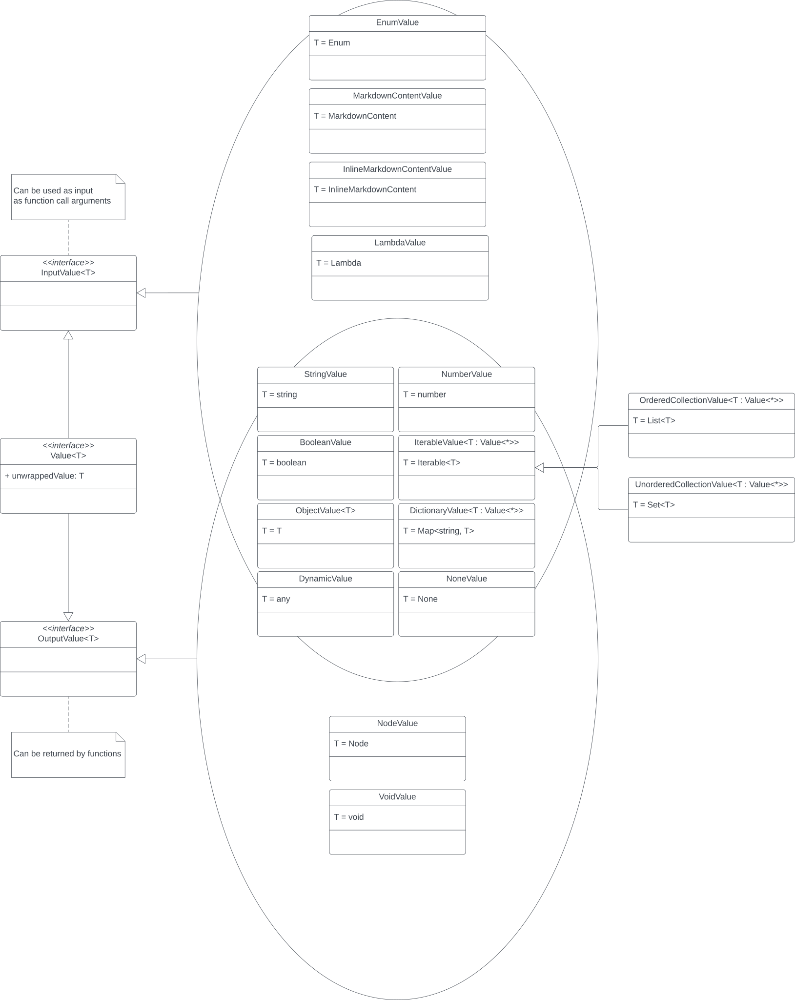

/

On this page
Pipeline - Function call expansion
Main packages:
core.function
Among the nodes generated from the Parsing stage, those of type FunctionCallNode(context, name, arguments) represent function calls.
While all other nodes never change after they are created, this is the only kind of mutable node, which means its inner data is expected to change after the AST has been fully generated. Its mutation affects its child nodes, which is initially an empty collection that is later populated by a component called function call expander.
Before addressing the expansion itself, we should understand how data is exchanged among functions. Quarkdown functions, either explicitly or implicitly, always return a Value, a type-checked object wrapper.
In Quarkdown, not all types can be returned and not all types can be used as arguments. Therefore, functions should feature InputValue parameters and return an OutputValue. A complete set of value types is visualized in the following Venn-UML diagram:

Whenever a function returns some OutputValue, it must be converted to some Node that can be rendered on screen. For instance, a StringValue becomes text, an OrderedCollectionValue becomes an ordered list, a BooleanValue becomes a checkbox, a DictionaryValue becomes a table, and so on. This operation is handled by a value-node mapper.
For each function call node enqueued by the parser, the corresponding function is looked up among loaded libraries1, argument-parameter bindings are established2, and the function is executed to obtain its output. After retrieving the output node from the mapper, the expander can push it to the function call’s child nodes, ready for the next stage.
1User-defined functions are also dynamically stored into a volatile library. Native libraries (e.g.stdlib) load their functions via reflection instead.2Quarkdown is dynamically typed, while the native libraries are written in a statically typed language (Kotlin). When an argument-parameter binding is created, if the argument’s type is dynamic, a conversion to its parameter’s static type is performed via the ValueFactory. If the conversion fails, an error is thrown.